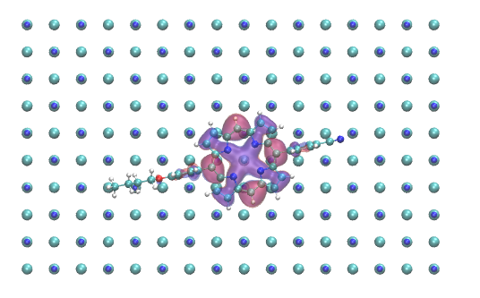
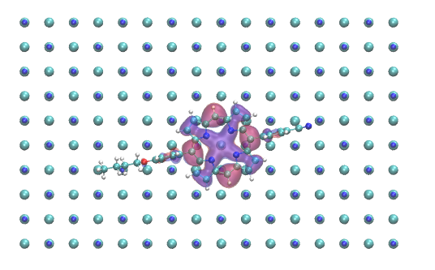

build Projects
- Sonoluminescence
- Stopping power
- Disordered systems - electronic localisation
- Sensor platforms
- AFM liquid - structure of electrolytes near surfaces
- HPC and parallelization
build Current research
We are working with leading experimental and computational groups to transform Atomic Force Microscopy in solution into a practical tool for characterizing solid-liquid interfaces at atomic resolution.
 

We are implementing an efficient version of Time Dependent Density Functional theory into the CP2K code
We investigate the properties of many interface systems.
Metal oxide / Metal for photo-cathode or microelectronics.
Molecular layers / insulators for new optical materials and coatings.
Solid liquid intefaces for electrochemical and energy applications.
We investigate the properties of many interface systems.
Metal oxide / Metal for photo-cathode or microelectronics.
Molecular layers / insulators for new optical materials and coatings.
Solid liquid intefaces for electrochemical and energy applications.

We are implementing a version of electronic transport using Non Equilibrium Green's Functions into the CP2K code.
Tip models for AFM in liquid

account_box People

Chris Dickens
UROS student
Undergraduate Research Opportunities Scheme
Anon
PhD student
Please get in touch if you are interested in pursuing a PhD at the University of Lincoln.
Tip models for AFM in liquid

present_to_all Recent Talks
Talk at Psi-k workshop: Atomic scale materials microscopy: theory meets experiment 26-28 Jun 2017 York (United Kingdom)
Brayford Pool

book Publications
See my Google Scholar page